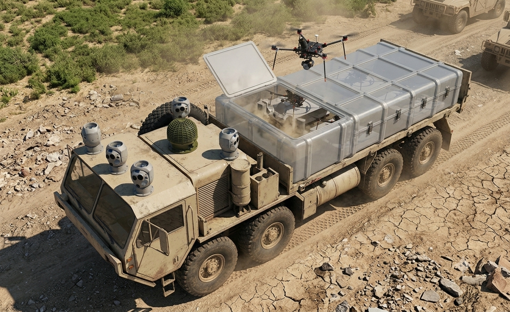

Low cost
Built on cheap, off-the-shelf airframes, sensors, and simple launchpads
Kit delivered under US$ 30k
Prototype

Built on cheap, off-the-shelf airframes, sensors, and simple launchpads
Kit delivered under US$ 30k
Ground-emplaced or vehicle mounted
Small, lightweight, modular components
Covers the full engagement chain — detection, onboard tracking, and intercept
Our prototype neutralizes small, evasive, RF-silent drones...
...striking deeper now, up to 100km, far beyond the frontline...
...exposing high-value assets everywhere, both military and civilian